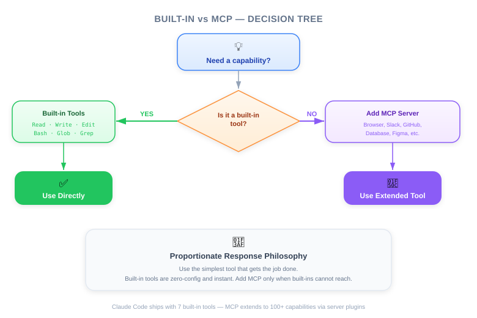
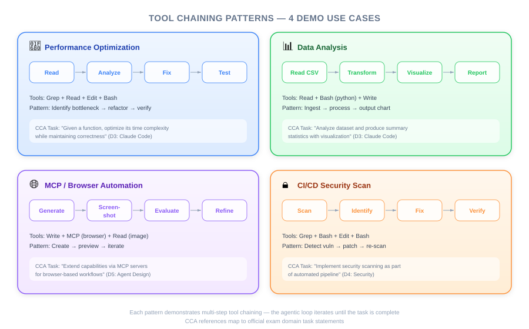
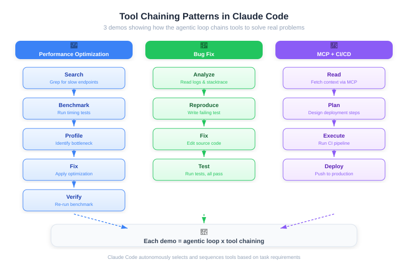

| Item | Detail |
|---|---|
| Exam Domain | D2 — Tool Design & MCP Integration (18%), D3 — Claude Code Configuration & Workflows (20%) |
| Task Statements | 2.5 (built-in tools), 2.4 (MCP integration), 3.6 (CI/CD), 1.1 (agentic loops) |
| Source | claude-code-in-action / 01-intro / Lesson 04 |

Claude Code's power comes from intelligent tool chaining across built-in capabilities, easy extensibility via MCP servers, and seamless CI/CD integration — not from any single tool in isolation.
Claude Code ships with a default set of tools that cover file I/O, execution, and search:
| Tool | Purpose | Category |
|---|---|---|
| Read | Read file contents (supports images, PDFs, notebooks) | File I/O |
| Write | Create or overwrite files | File I/O |
| Edit | Make targeted, surgical edits to existing files | File I/O |
| Bash | Execute shell commands | Execution |
| Grep | Search file contents with regex (powered by ripgrep) | Search |
| Glob | Find files by name/pattern | Search |
| NotebookEdit | Edit Jupyter notebook cells | Notebook |
| WebFetch | Fetch and analyze web content | Web |
| WebSearch | Search the web for current information | Web |
💡 Key Insight
The power isn't in any single tool — it's in how Claude chains them intelligently. Each demo in this lesson showcases a different chaining pattern.
Context: chalk is the 5th most downloaded npm package (~429M downloads/week). Even small performance improvements have massive ecosystem impact.
What Claude did (tool chain):
1. Plan — Created a structured todo list to track multi-step work
2. Search — Used Grep/Glob to find performance-relevant code paths
3. Benchmark — Ran existing benchmarks via Bash to establish baseline
4. Focus — Wrote a targeted test file isolating the hot path
5. Profile — Ran CPU profiler via Bash, Read the output
6. Fix — Used Edit to implement the optimization
7. Verify — Re-ran benchmarks to confirm improvement
Result: 3.9x throughput improvement on the targeted operation.
🎬 Instructor Insight
Claude builds a todo list to track its own progress through complex tasks. This self-management behavior emerges naturally — it's how agentic loops maintain coherence across many steps.🎯 Exam Note
This is the canonical example of Task 1.1 (agentic loops): Claude autonomously plans, executes, observes, and refines without human intervention between steps.
Context: CSV dataset of video streaming platform users. Goal: analyze user churn patterns.
What Claude did:
1. Read the CSV to understand schema
2. Wrote analysis code in Jupyter notebook cells
3. Executed cells and read the output — this is the critical differentiator
4. Based on actual results, customized the next analysis step
5. Iteratively refined visualizations and statistical tests
💡 Key Insight
Claude doesn't just generate code and hope it works. It executes cells, observes results, and adapts. This execute-observe-refine loop produces dramatically better analysis than generate-only approaches.
Why this matters for the exam: This demonstrates Task 3.5 (iterative refinement). The quality difference between "write code" and "write code, run it, read output, adjust" is substantial.
Context: A small app that generates UI components from text descriptions. Claude needs to style the output visually.
What Claude did:
1. Was given access to Playwright MCP server (browser control tools)
2. Opened the browser, took a screenshot to see current state
3. Made CSS/style changes via Edit
4. Re-screenshotted to verify visual result
5. Iterated until the styling matched expectations
Key technical points:
- MCP tools are added via configuration — no retraining needed
- Claude adapts to new tools based on their descriptions alone
- Tool description quality determines how effectively Claude uses the tool
💡 Exam Connection
This demonstrates Task 2.4: Integrate MCP servers into Claude Code and agent workflows. The exam philosophy here is Tool description > Few-shot — clear, well-written tool descriptions matter more than examples.
Context: Claude Code runs inside GitHub Actions, triggered by PR creation or @claude mentions in PR comments.
Scenario:
- AWS infrastructure defined in Terraform
- Architecture: DynamoDB table -> Lambda function -> S3 bucket
- The S3 bucket is shared with an external partner
- A PR adds user email to the data flow
- Adding PII (email) to a bucket shared externally = security/compliance risk
What Claude caught: The PII exposure risk — not because it was told "check for PII," but because it understood the Terraform infrastructure flow and recognized that user email would end up in the shared S3 bucket.
🎯 Exam Note
This maps directly to Task 3.6 (CI/CD integration) and embodies the exam philosophy: Architecture > Prompt. Claude catches issues by understanding infrastructure code structurally, not by being told what to look for.


| Pattern | Example from Demos | Task Statement | When to Apply |
|---|---|---|---|
| Plan -> Execute -> Verify | chalk optimization (D1) | 1.1: Agentic loops | Complex multi-step tasks |
| Execute -> Observe -> Refine | Jupyter analysis (D2) | 3.5: Iterative refinement | Data analysis, debugging |
| New tool adoption via MCP | Playwright browser (D3) | 2.4: MCP integration | When built-in tools insufficient |
| Automated review in CI | GitHub PR review (D4) | 3.6: CI/CD pipelines | Code review, compliance |
| Proportionate tool selection | All demos | 2.5: Built-in tools | Start simple, extend when needed |
💡 Exam Philosophy: Proportionate Response
Start with built-in tools. Only add MCP servers or custom tooling when built-in capabilities are genuinely insufficient. The exam tests whether you know WHEN to extend, not just HOW.
Your team uses Terraform to manage AWS infrastructure. A junior developer submits a PR that adds a user_phone field to a Lambda function that writes to an S3 bucket shared with a third-party analytics partner. How should you configure Claude Code to catch this?
You need Claude Code to optimize a Python function's performance. Which sequence of built-in tools represents the best approach?
A) Edit the code directly with a known optimization pattern
B) Read the code -> Bash (run profiler) -> Read profiler output -> Edit (apply fix) -> Bash (re-run benchmark)
C) Write a completely new implementation from scratch
D) Grep for similar optimizations in the codebase and copy them
You want Claude Code to verify that your web application's login page renders correctly after CSS changes. Which approach is most appropriate?
A) Have Claude Read the CSS file and reason about visual appearance
B) Add a Playwright MCP server so Claude can screenshot and visually verify
C) Write unit tests for every CSS property
D) Use Bash to run a headless browser and save screenshots for manual review